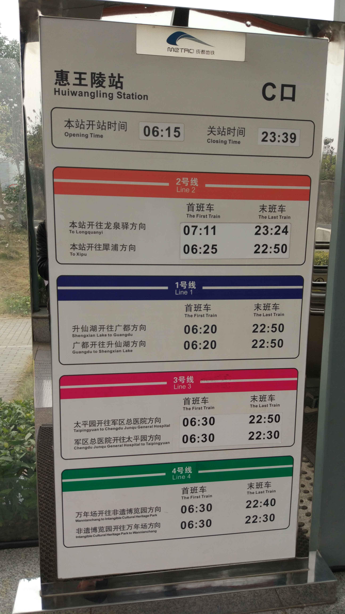

第四次成都游记, 半篇游记, 半篇面经.
旅途
说起旅途, 还是先聊聊我的囧事让你们开心开心.
- 头一晚订了酒店, 第二天中午面完试到了天府广场的时候才发现房卡没还. 没脑子的我差点就带着房卡跑路了
- 还了房卡后本打算下午去东郊记忆逛逛, 结果地铁站的售票妹纸说没有直达的地铁, 得去坐公交. 然后我看了下二号线沿途站点, 张口就说一张惠王陵. 再然后就高潮了啊, 出了惠王陵才发现尼玛这里只是地名叫惠王陵, 和百度百科写的惠王陵是尼玛两个地方, 尼玛嗨.
我只好平静地拍下了这张照片, 来好好纪念纪念惠王.

是的, 那天本打算再探索一下成都周边, 结果一下午的时间全花在了回房间睡觉和纪念惠王上了.
然后谈几点体验和发现(没有严格的时序)
关于成都重庆两座西部主要城市的对比仅是平心而论
- 高峰期的成都地铁比重庆轻轨高峰时要可怕
- 天府广场, 和去年还是有点变化, 比如星巴克对面的XXXX(街头音乐)
- 单论动车站的设计, 成都东比重庆北要好. 是的, 要好. 至少东站出门左拐就是地铁站, 而北站的奇葩设计是得步行十几分钟, 跨过山和大海还有马路, 才能进入轻轨站. 不过成都东站也有败笔, 就是候车区的座位远远不够, 太少了.
- 新发现, 成都今年流行口罩了. 据我观察有七成以上用的是PM2.5面罩. 一年前还真没几个人在用, 这霾, 柔啊
- 头天傍晚在去酒店路上看见一家隆江猪脚饭, 就去试了试. 比学校外头的猪脚饭真的要差很多, 俺吃完连饭都没加.
- 成都地铁检查水杯是靠人工嗅觉, 这点比重庆轻轨要low. 不过成都的入站检票已经告别了手工检票时代.
- 成都地铁的运行时戒备比较高, 如果车厢相对空闲, 会看到有专门的巡查员走动.
旅途的最后嘛, 就是直奔了大龙泉.
然后冒着生命危险拍了张照片, 保安大叔喊不能拍照的时候已经迟了. (还有啊, 确定真正的间谍能听懂川普？)
成都目前的规划, 中部是成都老主城, 北部划分的那一块基本因为天府新区的开发而停滞了, 南部以天府新区为主(房价最高), 各种IT互联网的分部都建在这里. 东部则是以龙泉为主, 好像是基于制造业的吧, 比如东郊记忆其实就是个工业遗址.
话说龙泉周边真的有一股很浓的航天气息, 各种航天幼儿园, 航天小学, 航天中学…
面试
回归到面试的主线上来
知乎和知道创宇, 一个初恋, 一个情人.
两个Offer都拿到, 这概率简直小到炸, 而且也会纠结死. 一个都没有, 那未免也太伤自尊. 刚好拿一个, 是在动车上最最真实的想法.
知道创宇的小插曲
- 本来投了简历的第二天就收到HR电话, 然后口头约了周二现场面. 周一没收到通知, 主动电联后称不接受未毕业的童鞋, 并且那个事业部是刚性需求, 连实习机会也没有给. 虽然电话后面说帮忙把简历往其他部门转发, 没准才挂了电话就把简历给清了. 我不确定应届生这一点是上周HR的疏忽还是委婉谢绝. 不过话说回来, 以知道创宇在黑客界的名气和认可度, 作为应届生被无形鄙视一把也是hin应该的
成都知乎研发实习岗
技术面试提问集
- MySQL的理解
- Redis底层
- 闭包深入
- 设计模式(Singleton的装饰器实现)
- 堆排算法
- 快排算法
- 语言部分：
- 基本的作用域
- 装饰器相关
- 缓存函数的返回值(装饰器实现)
- GIL锁相关
- Queue的线程安全和定制锁
问到高级特性时只回答了推导式, 生成器, 装饰器这些, 元类和自省到嘴边没说.
任务定制及策略
- 高级编程重点部分再研读一遍, 特别是还没理解的小节
- 高手之路, 熟悉基本开发过程
- redis设计与实现可以开始看了
- 多运用Google的小黄鸭技巧
- 假期把提到的想法按照规范开发实现一下
办公环境
- 发现一楼电梯外标的公司名称不是叫智者天下(公司的注册登记这些不懂)
- 男洗手间里头有单独的淋浴室…
- 目前办公楼层利用率不高, 仅有301是实际的办公区. 相信年后会大有不同
- 成都知乎人员整体很年轻, 等待面试时经常有妹纸问我是不是来面试的, 然后提醒我随便吃喝
- 当天面信息审核的人特别多, 除了我之外全都是这个岗位, 并且是群面. 技术面试单独在302, 目前闲置, 估计过了年将有一大波工程师来袭.
面试小结
知乎的技术面在上午, 状态和发挥不太满意. 是的, 上午的脑子永远是阶段性空白. 得清楚自己一天里最佳状态的时间段, 约的时间也尽量往那个时间段上靠. 面试就是你的个人秀, 保证发挥这一点永远高于其他任何因素.
第二天中午回学校路上, 在轻轨上接到HR电话, 信号不好往后延了一下时间点.
发现知乎HR特别喜欢的回复是：没问题.
技术二面, 时间安排还是挺紧凑的, 当天(第二天)晚上八点Skype视频面, 聊了45分钟. 面试官三十出头的样子, 和蔼可亲, 很有耐心. 没问太多的细枝末节, 倒是挺考察如何思考问题还有平时的学习方法. 不知道为啥在面试过程中邱逗经常笑, 我也是醉了. 另外最后忘记问面试官名字了, 没准就是自己关注的大V之一
写在最后
找工作这事吧, 可能大部分同学是偏海投, 拿了Offer就慢慢挑. 我自己的话就很屌丝气质, 虽然有中意的, 但会老感觉自己准备不足, 水平不够, 应该要学着把女神当普通朋友. 另外, 趁着大四最后的美好时光, 好好夯实基础还是很有必要的.
面完试等通知期间的忐忑是种体验. 是的, 面试就是得去体验, 光看别人的面经没有用. 如果有中意的公司, 记得在它之前先面几家别的, 就当是查漏补缺和锻炼心态. 打野升级嘛, 可别像我一样, 一心只惦记着肉山了.